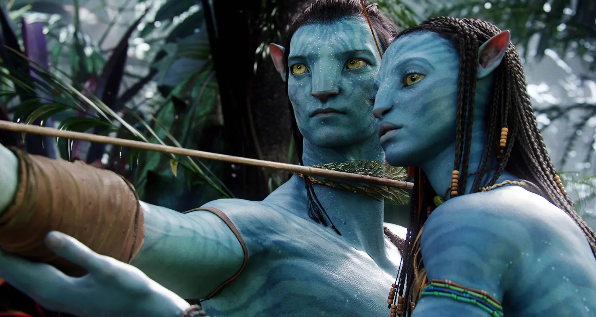
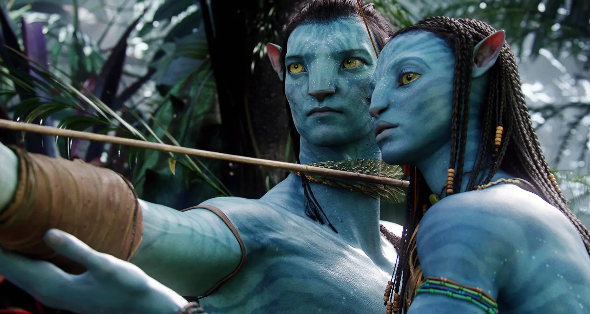

Kamilia KEBIR
Licence 2 des Sciences du Langage
 

Mon CV des trois dernières années :
| année universitaire | Statut |
|---|
| 2022-2023 | terminale STI2D- BAC tech |
| 2021-2022 | première STI2D- BAC de FRC |
| 2020-2021 | seconde GENERALE |
Voici les cinq derniers livres que j'ai lu :
- Dans son Silence, Alex Michaelides, édition (?) Thriller psycologie
- Lettre d'une inconnue, Qui, édition Quoi
- Les memoires d'un expert psycatre, Angélina Delcroix, édition (?) Thriller
- Titre, Qui, édition Quoi
- Titre, Qui, édition Quoi